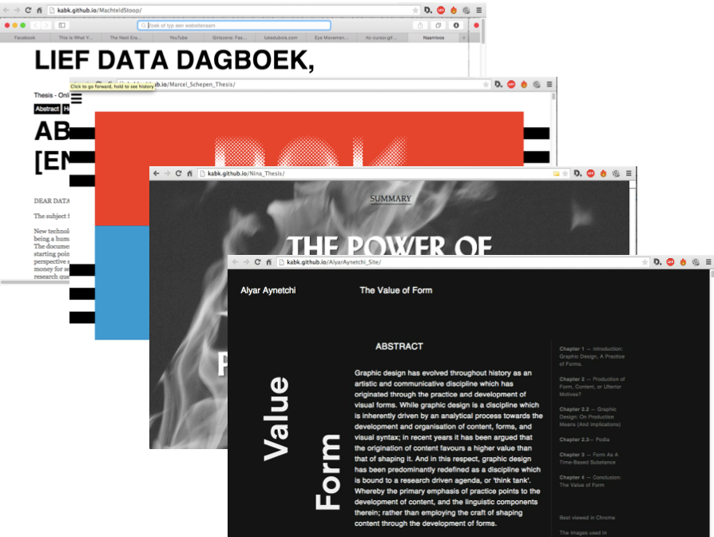

Thesis Pressure Cooker

For your thesis, you create a hybrid design that adapts to both screen and print, using basic web technologies like HTML and CSS. You share and archive the thesis using the collaborative coding site Github. See last years results.